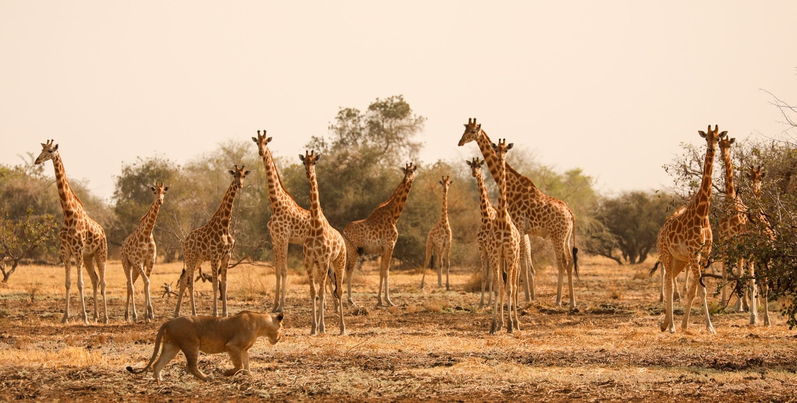

Les Éléphants
Troupeaux majestueux désormais en sécurité, symboles de la renaissance du parc après des années de protection intense.

Une success-story mondiale en matière de conservation de la faune, abritant l'une des plus importantes populations d'éléphants et de girafes de Kordofan du continent.
Un joyau préservé
Créé en 1963, le Parc National de Zakouma couvre près de 3 050 km² dans le sud-est du Tchad. Géré en partenariat avec l'ONG African Parks depuis 2010, le parc a connu une restauration spectaculaire, mettant un frein quasi total au braconnage et permettant la renaissance de son écosystème unique.
Zakouma est aujourd'hui considéré comme l'un des espaces sauvages les plus préservés d'Afrique centrale, offrant un refuge vital pour une biodiversité extraordinaire.
3 050 km²
Superficie
+380
Espèces d'oiseaux
50%+
Girafes de Kordofan
Biodiversité
Troupeaux majestueux désormais en sécurité, symboles de la renaissance du parc après des années de protection intense.
Zakouma abrite plus de la moitié de la population mondiale de cette sous-espèce menacée d'extinction.
Un paradis pour l'observation des oiseaux, notamment lors du rassemblement autour des points d'eau permanents.
Lions, léopards et guépards cohabitent au cœur des plaines inondables avec les buffles et diverses antilopes.
Immersion Visuelle

Grands troupeaux d'éléphants

Girafes de Kordofan au coucher du soleil

Safari guidé au cœur de la plaine

Rassemblement d'oiseaux migrateurs
Aperçu du parc et du travail de conservation d'African Parks.
Vidéo officielle de présentation de la faune du Tchad.